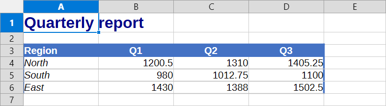
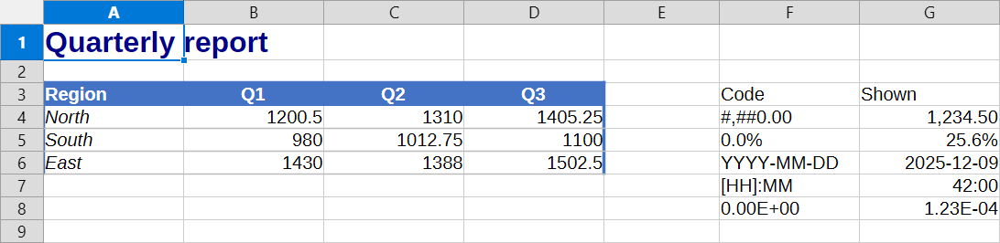
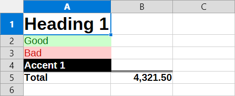

Cell formats
These functions set what LibreOffice's Format ▸ Cells dialog sets: setFont, setFill, setBorder, setAlignment and setFormat, with their getters and their setUniform* variants. A file must be open for writing (mode="rw", or made by newods); the getters also work on files opened for reading.
They take a cell ("B2"), a range ("B2:D4"), whole columns ("A:C") or rows ("3:5"), a list of ranges ("A1:B2,D4"), a named range, or rows and columns as integers, ranges, vectors or :. On a file, the reference names its sheet: setFont(xf, "Sheet1.A1"; bold = true).
Fonts, fills, borders and alignment
using OpenDocumentSpreadsheets
xf = newods("Report")
sh = xf["Report"]
sh["A1"] = "Quarterly report"
sh["A3:D3"] = ["Region" "Q1" "Q2" "Q3"]
sh["A4:D6"] = ["North" 1200.5 1310 1405.25; "South" 980 1012.75 1100; "East" 1430 1388 1502.5]
setColumnWidth(sh, "A:D"; width = 12)
setFont(sh, "A1"; bold = true, size = 16, color = "darkblue")
setFont(sh, "A3:D3"; bold = true, color = "white")
setFill(sh, "A3:D3"; pattern = "solid", fgColor = "4472C4")
setBorder(sh, "A3:D6"; outside = ["style" => "medium", "color" => "4472C4"])
setBorder(sh, "A4:D6"; bottom = ["style" => "thin", "color" => "BBBBBB"])
setAlignment(sh, "B3:D3"; horizontal = "center")
setFont(sh, "A4:A6"; italic = true)
A cell's background (Format ▸ Cells ▸ Background) is set with pattern = "solid" and the colour as fgColor; without pattern, nothing is filled. The names come from patterned fills, where fgColor is the pattern's colour and bgColor the colour behind it; OpenDocument cells have plain backgrounds, so a pattern is blended into one colour. Colours are hex ("4472C4") or names ("darkblue").
Each setter changes only what its keywords give: setFont(sh, "A1"; bold = true) leaves the font's size, colour and name, and the cell's fill, borders and number format, as they were. LibreOffice keeps formatting in cell styles, so a setter gives each cell a style made from its current one; a named style the cell had stays underneath, as in LibreOffice.
Setters return the name of the cell style they made, for a single cell. Getters report what the cell's style resolves to, also on files opened for reading:
using OpenDocumentSpreadsheets: getFont, getFill
getFont(sh, "A1") # its font: name, size, bold, colour, ...
getFill(sh, "B3") # its fillEvery setter works on empty cells, as in LibreOffice, and whole columns and rows are formatted to the end of the sheet.
Formatting a range alike
A setter given a range changes each cell's own formatting, so cells that differed still differ in everything else. The setUniform* functions instead make the range alike: they format its first (top-left) cell, then give every cell that cell's font, fill, border, alignment or number format.
regions = addsheet!(xf, "Regions")
regions["A1:C2"] = ["North" 1 2; "South" 3 4]
setFont(regions, "A1"; bold = true, size = 14)
setFont(regions, "A1:C2"; color = "darkgreen") # all green; A1 is still the only bold, 14 pt cell
setUniformFont(regions, "A1:C2"; italic = true) # every cell gets A1's font: bold, 14 pt, green, italicsetUniformFill, setUniformBorder, setUniformAlignment and setUniformFormat work the same way for their part. setUniformStyle gives every cell the first cell's whole style, and setOutsideBorder draws a frame round a range.
Number formats
setFormat takes a format code, as typed in Format ▸ Cells ▸ Numbers ▸ Format code, or one of the named formats. getText shows a value as LibreOffice shows it:
sh["F3:F8"] = ["Code"; "#,##0.00"; "0.0%"; "YYYY-MM-DD"; "[HH]:MM"; "0.00E+00";;]
sh["G3"] = "Shown"
for (r, v) in zip(4:8, [1234.5, 0.256, 46000, 1.75, 0.000123])
sh[r, 7] = v
setFormat(sh, "G$r"; format = sh[r, 6])
end
setColumnWidth(sh, "F:G"; width = 12)
OpenDocumentSpreadsheets.getText(sh, "G4") # "1,234.50"
Number formats are stored as OpenDocument data styles, in the form LibreOffice writes for the same code. A value is shown as LibreOffice shows it: General shows up to 15 significant digits, for example.
Named cell styles
The Styles deck (F11) lists a file's cell styles: "Default", "Heading 1", "Good", and styles of your own.
setCellStyleapplies a style.addCellStyle!defines one, from the same keywords the setters take.getCellStylegives a cell's style.
xf = newods("Styles")
styled = xf["Styles"]
styled["A1"] = "Heading 1"; styled["A2"] = "Good"; styled["A3"] = "Bad"; styled["A4"] = "Accent 1"
styled["A5"] = "Total"; styled["B5"] = 4321.5
for r in 1:4
setCellStyle(styled, "A$r", styled[r, 1]) # LibreOffice's built-in styles
end
addCellStyle!(xf, "Total"; parent = "Default",
font = (bold = true,), border = (top = ["style" => "double"],), format = "#,##0.00")
setCellStyle(styled, "A5:B5", "Total")
setColumnWidth(styled, "A"; width = 14)
OpenDocumentSpreadsheets.getCellStyle(styled, "A1") # "Heading 1"
- Direct formatting stays on top, as in LibreOffice. Applying a style removes the cell's own settings only for what the style sets (its font size, say). The rest stays, including the number format unless the style has one.
- LibreOffice's built-in styles are added, as LibreOffice defines them, to a file that lacks them: Heading, Heading 1, Heading 2, Text, Note, Footnote, Hyperlink, Status, Good, Neutral, Bad, Warning, Error, Accent, Accent 1 to 3, and Result.
- Names are the ones LibreOffice shows. In the file, a name such as "My Style" is stored as
My_20_Style; either form is accepted.
What a cell style can't hold
- Superscript and subscript apply to text, not cells: use rich text.
- Pattern fills are blended into one colour, as LibreOffice shows them.